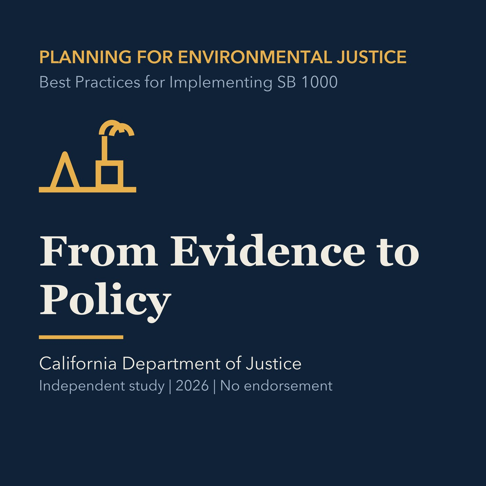

EPISODE 04
From Evidence to Strong Policies
Connects identified burdens to specific objectives, accountable actions, measurable outcomes, funding, and timelines.

- Stable GUID
784b3b4e-bb1f-5907-a890-4fe962357b8a- Release
- environmental-justice-land-use-planning-v2026.2
- SHA-256
0089387d47d229b07f2b000ee4e3059839a392fe6fbd60ea65a4ecc348ce87d2